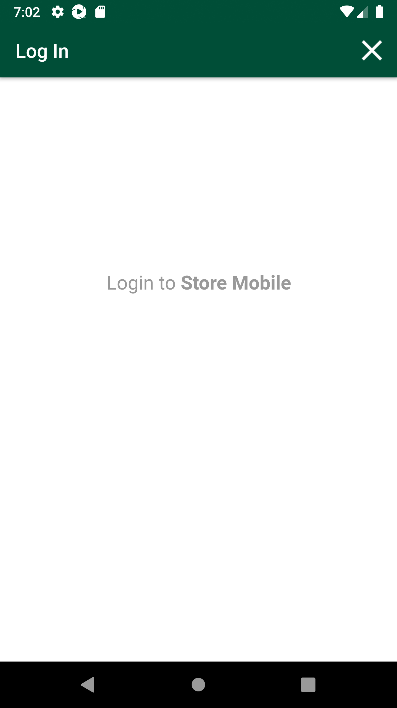
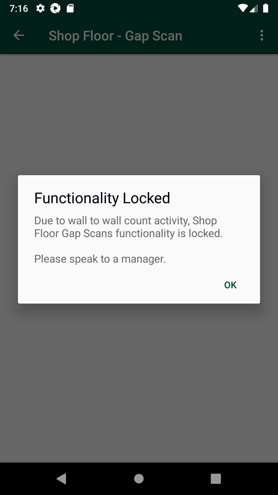

-
Verify AM GLH Functionality
1:33:31 PM / 00:29:58:854 Fail
Verify AM GLH Functionality
04.01.2024 1:33:31 PM 04.01.2024 2:03:30 PM 00:29:58:854 · #test-id=1@store_walk @regression @NewAm_glh1_701PassTO CHANGE THE DEVICE TIMINGS AS REQUIREDPassTO CHANGE THE DEVICE TIMINGS AS REQUIREDGiven I send the time "07" and mins "00" and meridiem "am" and current date in listThen I Change timeThen I Change datePassTO CHANGE THE DEVICE TIMINGS AS REQUIREDGiven I send the time "03" and mins "00" and meridiem "pm" and current date in listThen I Change timeThen I Change datePassCreate SOH for itemsPassCreate SOH for itemsGiven I create SOH for the Items based on Response code "" " " " " " " FailTC-01_Verify UI of Gaps, Count is displayed as expected or notWhen I enter Username and Password for SMA Collegue userAnd I click on login button for SMAThen I click on 'stockMngmtText' on page 'HomePagePO_New'Then I click on "Shop Floor - Gap Scan"Then I click on Fixture Scancom.morrisons.common.action.Hook.afterScenario(io.cucumber.java.Scenario)And I click on Back ButtonStep skippedThen I click on OffShelfStep skippedAnd I click on Back ButtonStep skippedThen I click on PetrolStep skippedAnd I click on Back ButtonStep skippedThen I click on WareHouseStep skippedAnd I click on Back ButtonStep skippedThen I click on ReviewStep skippedAnd I click on Back ButtonStep skippedThen I click on SummaryStep skippedAnd I click on Back ButtonStep skippedFailDelete GLH Storewalk from ServiceFailDelete GLH Storewalk from ServiceGiven request is made to capture access token and post endpoint for user v2 for "grant_type=getFromResponse"com.morrisons.common.action.Hook.afterScenario(io.cucumber.java.Scenario)
Then I Verify the Response Code for the following "- " is 200
Step skippedAnd I get the field value for the field "access_token"Step skippedAnd Get the generated Access Tocken for SMA app Login ServiceStep skippedGiven Get request is made to Get storewalks service for current dateStep skippedAnd Get Operation perform on service requestStep skippedThen Verify Get storewalks service response for current dateStep skippedThen Delete request is made to Delete GLH storewalk for store id "8"Step skippedFailTC_02_16131_Scan product as Gap in fixture scan and verify records are present in warehouse. Delete product from fixture and verify records are not present in warehouse.FailTC_02_16131_Scan product as Gap in fixture scan and verify records are present in warehouse. Delete product from fixture and verify records are not present in warehouse.When I enter Username and Password for SMA Collegue userAnd I click on login button for SMAThen I click on 'stockMngmtText' on page 'HomePagePO_New'Then I click on "Shop Floor - Gap Scan"Then I click on Fixture Scancom.morrisons.common.action.Hook.afterScenario(io.cucumber.java.Scenario)And I click on barcode entry ButtonStep skippedThen Enter "107514491" numberStep skippedAnd I click on GAP buttonStep skippedAnd I choose the plan from popup if multiple records presentStep skippedThen I verify the if it is GAPStep skippedAnd I click on Back ButtonStep skippedThen I click on WareHouseStep skippedThen I verify my min is present in the "Household & Pet Food"Step skippedAnd I click on Back ButtonStep skippedGiven request is made to capture access token and post endpoint for user v2 for "" Step skippedThen I Verify the Response Code for the following "- " is 200
Step skippedAnd I get the field value for the field "access_token"Step skippedAnd Get the generated Access Tocken for SMA app Login ServiceStep skippedGiven Get request is made to Get storewalks service for current dateStep skippedAnd Get Operation perform on service requestStep skippedThen I verify Product id "107514491" for Store id "8" and Walk type "GapsHighsLows" is present in Get storewalk serviceStep skippedThen I verify Section status is "Available" in Get storewalk serviceStep skippedThen I click on Fixture ScanStep skippedThen I click on ViewList of GapsLowHighStep skippedAnd I Delete products from fixtureStep skippedAnd I click on Back Button till we get to the "Warehouse" pageStep skippedThen I click on WareHouseStep skippedThen I verify that record is deleted from WareHouseStep skippedFailTC_03_16131_Scan product as Count in fixture scan and verify records are present in warehouse. Delete product from fixture and verify records are not present in warehouse.FailTC_03_16131_Scan product as Count in fixture scan and verify records are present in warehouse. Delete product from fixture and verify records are not present in warehouse.When I enter Username and Password for SMA Collegue userAnd I click on login button for SMAThen I click on 'stockMngmtText' on page 'HomePagePO_New'Then I click on "Shop Floor - Gap Scan"Then I click on Fixture Scancom.morrisons.common.action.Hook.afterScenario(io.cucumber.java.Scenario)And I click on barcode entry ButtonStep skippedThen Enter "100162509" numberStep skippedAnd I click on dynamic "sLocatorName" "COUNT" on page 'GapsLowsHighsPO'Step skippedAnd I enter quantity "2" for fixture and warehouseStep skippedAnd I choose the plan from popup if multiple records presentStep skippedAnd I click on Back ButtonStep skippedThen I click on WareHouseStep skippedThen I verify my min is present in the "Grocery (Impulse)"Step skippedAnd Get the generated Access Tocken for SMA app Login ServiceStep skippedGiven Get request is made to Get storewalks service for current dateStep skippedAnd Get Operation perform on service requestStep skippedThen I verify Product id "100162509" for Store id "8" and Walk type "GapsHighsLows" is present in Get storewalk serviceStep skippedThen I verify Capture details in storewalk for Product id "100162509" is Capture type "Count" Capture status "Incomplete" and Capture quantity "2"Step skippedThen I verify Section status is "Available" in Get storewalk serviceStep skippedAnd I click on Back ButtonStep skippedThen I click on Fixture ScanStep skippedThen I click on ViewList of GapsLowHighStep skippedAnd I Delete products from fixtureStep skippedAnd I click on Back ButtonStep skippedAnd I click on Back ButtonStep skippedAnd I click on Back ButtonStep skippedThen I click on WareHouseStep skippedThen I verify that record is deleted from WareHouseStep skippedFailTC_04_16131_Scan product as Count in fixture scan and verify records are present in warehouse. Delete product from fixture and verify records are not present in warehouse.FailTC_04_16131_Scan product as Count in fixture scan and verify records are present in warehouse. Delete product from fixture and verify records are not present in warehouse.When I enter Username and Password for SMA Collegue userAnd I click on login button for SMAThen I click on 'stockMngmtText' on page 'HomePagePO_New'Then I click on "Shop Floor - Gap Scan"Then I click on Fixture Scancom.morrisons.common.action.Hook.afterScenario(io.cucumber.java.Scenario)And I click on barcode entry ButtonStep skippedThen Enter "101533092" numberStep skippedAnd I click on COUNT buttonStep skippedAnd I Enter the Low quantity "2"Step skippedAnd I choose the plan from popup if multiple records presentStep skippedAnd I click on Back ButtonStep skippedThen I click on WareHouseStep skippedThen I verify my min is present in the "Alcohol"Step skippedAnd Get the generated Access Tocken for SMA app Login ServiceStep skippedGiven Get request is made to Get storewalks service for current dateStep skippedAnd Get Operation perform on service requestStep skippedThen I verify Product id "101533092" for Store id "8" and Walk type "GapsHighsLows" is present in Get storewalk serviceStep skippedThen I verify Capture details in storewalk for Product id "101533092" is Capture type "Count" Capture status "Incomplete" and Capture quantity "2"Step skippedThen I verify Section status is "Available" in Get storewalk serviceStep skippedAnd I click on Back ButtonStep skippedThen I click on Fixture ScanStep skippedThen I click on ViewList of GapsLowHighStep skippedAnd I Delete products from fixtureStep skippedAnd I click on Back Button till we get to the "Warehouse" pageStep skippedThen I click on WareHouseStep skippedThen I verify that record is deleted from WareHouseStep skippedFailTC_06_16133_Verify if product is marked as COUNT, then in view list two entries should be present.FailTC_06_16133_Verify if product is marked as COUNT, then in view list two entries should be present.When I enter Username and Password for SMA Collegue userAnd I click on login button for SMAAnd Get the generated Access Tocken for SMA app Login ServiceGiven Get request is made to Get storewalks service for current dateAnd Get Operation perform on service requestThen Verify Get storewalks service response for current dateThen Delete request is made to Delete GLH storewalk for store id "8"Then I click on 'stockMngmtText' on page 'HomePagePO_New'Then I click on "Shop Floor - Gap Scan"Then I click on Fixture Scancom.morrisons.common.action.Hook.afterScenario(io.cucumber.java.Scenario)And I click on barcode entry ButtonStep skippedThen Enter "107514491" numberStep skippedAnd I click on COUNT buttonStep skippedAnd I enter quantity "2" for fixture and warehouseStep skippedAnd I choose the plan from popup if multiple records presentStep skippedAnd I will capture the product name from view listStep skippedThen I verify the product MIN value "107514491" from view listStep skippedAnd I click on ViewList to verify that two entries are present for MIN "107514491"Step skippedAnd I Delete products from fixtureStep skippedFailTC_07_Verify that GAP is properly generated in Fixture Scan and view list GAP status, Product name and Product min value should displayed.To verify Last capture section displaying correct information when the last capture has been taken in AM GLH and scanned as GAP.FailTC_07_Verify that GAP is properly generated in Fixture Scan and view list GAP status, Product name and Product min value should displayed.To verify Last capture section displaying correct information when the last capture has been taken in AM GLH and scanned as GAP.When I enter Username and Password for SMA Collegue userAnd I click on login button for SMAAnd Get the generated Access Tocken for SMA app Login ServiceGiven Get request is made to Get storewalks service for current dateAnd Get Operation perform on service requestThen Verify Get storewalks service response for current dateThen Delete request is made to Delete GLH storewalk for store id "8"Then I click on 'stockMngmtText' on page 'HomePagePO_New'Then I click on "Shop Floor - Gap Scan"Then I click on Fixture Scancom.morrisons.common.action.Hook.afterScenario(io.cucumber.java.Scenario)And I click on barcode entry ButtonStep skippedThen Enter "110440154" numberStep skippedAnd I click on GAP buttonStep skippedAnd I choose the plan from popup if multiple records presentStep skippedAnd I will capture the product name from view listStep skippedThen I verify the product MIN value "110440154" from view listStep skippedThen I verify the if it is GAPStep skippedAnd I click on Back ButtonStep skippedThen I click on WareHouseStep skippedThen I verify my min is present in the "Grocery (Impulse)"Step skippedAnd I click on Back ButtonStep skippedThen I click on hotKeyStep skippedAnd I select StockInformation from the Hotkey MenuStep skippedAnd I click on barcode entry ButtonStep skippedThen Enter "110440154" numberStep skippedAnd I verify Last Capture Type is "AM Gap"Step skippedAnd I verify Date and User details for Last captureStep skippedAnd I verify Counted column and counted quantity "0" for last capture are presentStep skippedAnd I click on Back ButtonStep skippedAnd I click on Back ButtonStep skippedFailTC_08_Verify that COUNT is properly generated in Fixture Scan and view list LOW status, Product name and Product min value should displayed.To verify Last capture section displaying correct information when the last capture has been taken in Low and scanned as LOW.FailTC_08_Verify that COUNT is properly generated in Fixture Scan and view list LOW status, Product name and Product min value should displayed.To verify Last capture section displaying correct information when the last capture has been taken in Low and scanned as LOW.When I enter Username and Password for SMA Collegue userAnd I click on login button for SMAThen I click on 'stockMngmtText' on page 'HomePagePO_New'Then I click on "Shop Floor - Gap Scan"Then I click on Fixture Scancom.morrisons.common.action.Hook.afterScenario(io.cucumber.java.Scenario)And I click on barcode entry ButtonStep skippedThen Enter "109154185" numberStep skippedAnd I click on dynamic "sLocatorName" "COUNT" on page 'GapsLowsHighsPO'Step skippedAnd I Enter the Low quantity "2"Step skippedAnd I choose the plan from popup if multiple records presentStep skippedAnd I will capture the product name from view listStep skippedThen I verify the product MIN value "109154185" from view listStep skippedAnd I verfify "109154185" item is presentStep skippedAnd I click on Back ButtonStep skippedThen I click on hotKeyStep skippedAnd I select StockInformation from the Hotkey MenuStep skippedAnd I click on barcode entry ButtonStep skippedThen Enter "109154185" numberStep skippedAnd I verify Last Capture Type is "Count"Step skippedAnd I verify Date and User details for Last captureStep skippedAnd I verify Counted column and counted quantity "4" for last capture are presentStep skippedAnd I click on Back ButtonStep skippedAnd I click on Back ButtonStep skippedFailTC_08_Verify that COUNT is properly generated in Fixture Scan and view list LOW status, Product name and Product min value should displayed.To verify Last capture section displaying correct information when the last capture has been taken in Low and scanned as LOW.When I enter Username and Password for SMA Collegue userAnd I click on login button for SMAThen I click on 'stockMngmtText' on page 'HomePagePO_New'Then I click on "Shop Floor - Gap Scan"Then I click on Fixture Scancom.morrisons.common.action.Hook.afterScenario(io.cucumber.java.Scenario)And I click on barcode entry ButtonStep skippedThen Enter "100162509" numberStep skippedAnd I click on dynamic "sLocatorName" "COUNT" on page 'GapsLowsHighsPO'Step skippedAnd I Enter the Low quantity "4"Step skippedAnd I choose the plan from popup if multiple records presentStep skippedAnd I will capture the product name from view listStep skippedThen I verify the product MIN value "100162509" from view listStep skippedAnd I verfify "100162509" item is presentStep skippedAnd I click on Back ButtonStep skippedThen I click on hotKeyStep skippedAnd I select StockInformation from the Hotkey MenuStep skippedAnd I click on barcode entry ButtonStep skippedThen Enter "100162509" numberStep skippedAnd I verify Last Capture Type is "Count"Step skippedAnd I verify Date and User details for Last captureStep skippedAnd I verify Counted column and counted quantity "8" for last capture are presentStep skippedAnd I click on Back ButtonStep skippedAnd I click on Back ButtonStep skippedFailTC_08_Verify that COUNT is properly generated in Fixture Scan and view list LOW status, Product name and Product min value should displayed.To verify Last capture section displaying correct information when the last capture has been taken in Low and scanned as LOW.When I enter Username and Password for SMA Collegue userAnd I click on login button for SMAThen I click on 'stockMngmtText' on page 'HomePagePO_New'Then I click on "Shop Floor - Gap Scan"Then I click on Fixture Scancom.morrisons.common.action.Hook.afterScenario(io.cucumber.java.Scenario)And I click on barcode entry ButtonStep skippedThen Enter "107742952" numberStep skippedAnd I click on dynamic "sLocatorName" "COUNT" on page 'GapsLowsHighsPO'Step skippedAnd I Enter the Low quantity "4"Step skippedAnd I choose the plan from popup if multiple records presentStep skippedAnd I will capture the product name from view listStep skippedThen I verify the product MIN value "107742952" from view listStep skippedAnd I verfify "107742952" item is presentStep skippedAnd I click on Back ButtonStep skippedThen I click on hotKeyStep skippedAnd I select StockInformation from the Hotkey MenuStep skippedAnd I click on barcode entry ButtonStep skippedThen Enter "107742952" numberStep skippedAnd I verify Last Capture Type is "Count"Step skippedAnd I verify Date and User details for Last captureStep skippedAnd I verify Counted column and counted quantity "8" for last capture are presentStep skippedAnd I click on Back ButtonStep skippedAnd I click on Back ButtonStep skippedFailTC_09_Verify that High is properly generated in Fixture Scan and view list HIGH status, Product name and Product min value should displayed. To verify Last capture section displaying correct information when the last capture has been taken in High and scanned as HIGH.FailTC_09_Verify that High is properly generated in Fixture Scan and view list HIGH status, Product name and Product min value should displayed. To verify Last capture section displaying correct information when the last capture has been taken in High and scanned as HIGH.And Get the generated Access Tocken for SMA app Login ServiceGiven Get request is made to Get storewalks service for current dateAnd Get Operation perform on service requestThen Verify Get storewalks service response for current dateThen Delete request is made to Delete GLH storewalk for store id "8"When I enter Username and Password for SMA Collegue userAnd I click on login button for SMAThen I click on 'stockMngmtText' on page 'HomePagePO_New'Then I click on "Shop Floor - Gap Scan"Then I click on Fixture Scancom.morrisons.common.action.Hook.afterScenario(io.cucumber.java.Scenario)And I click on barcode entry ButtonStep skippedThen Enter "103853612" numberStep skippedAnd I click on dynamic "sLocatorName" "COUNT" on page 'GapsLowsHighsPO'Step skippedAnd I enter quantity "2" for fixture and warehouseStep skippedAnd I choose the plan from popup if multiple records presentStep skippedAnd I click on OKStep skippedAnd I will capture the product name from view listStep skippedThen I verify the product MIN value "103853612" from view listStep skippedAnd I click on Back ButtonStep skippedThen I click on hotKeyStep skippedAnd I select StockInformation from the Hotkey MenuStep skippedAnd I click on barcode entry ButtonStep skippedThen Enter "103853612" numberStep skippedAnd I verify Last Capture Type is "Count"Step skippedAnd I verify Date and User details for Last captureStep skippedAnd I verify Counted column and counted quantity "4" for last capture are presentStep skippedAnd I click on Back ButtonStep skippedAnd I click on Back ButtonStep skippedFailTC_09_Verify that High is properly generated in Fixture Scan and view list HIGH status, Product name and Product min value should displayed. To verify Last capture section displaying correct information when the last capture has been taken in High and scanned as HIGH.And Get the generated Access Tocken for SMA app Login ServiceGiven Get request is made to Get storewalks service for current dateAnd Get Operation perform on service requestThen Verify Get storewalks service response for current dateThen Delete request is made to Delete GLH storewalk for store id "8"When I enter Username and Password for SMA Collegue userAnd I click on login button for SMAThen I click on 'stockMngmtText' on page 'HomePagePO_New'Then I click on "Shop Floor - Gap Scan"Then I click on Fixture Scancom.morrisons.common.action.Hook.afterScenario(io.cucumber.java.Scenario)And I click on barcode entry ButtonStep skippedThen Enter "110440154" numberStep skippedAnd I click on dynamic "sLocatorName" "COUNT" on page 'GapsLowsHighsPO'Step skippedAnd I enter quantity "4" for fixture and warehouseStep skippedAnd I choose the plan from popup if multiple records presentStep skippedAnd I click on OKStep skippedAnd I will capture the product name from view listStep skippedThen I verify the product MIN value "110440154" from view listStep skippedAnd I click on Back ButtonStep skippedThen I click on hotKeyStep skippedAnd I select StockInformation from the Hotkey MenuStep skippedAnd I click on barcode entry ButtonStep skippedThen Enter "110440154" numberStep skippedAnd I verify Last Capture Type is "Count"Step skippedAnd I verify Date and User details for Last captureStep skippedAnd I verify Counted column and counted quantity "8" for last capture are presentStep skippedAnd I click on Back ButtonStep skippedAnd I click on Back ButtonStep skippedFailFirst scan in GLH as LOW then as HIGH/GAP , captured should override with latest Capture details in Stock information screenFailFirst scan in GLH as LOW then as HIGH/GAP , captured should override with latest Capture details in Stock information screenWhen I enter Username and Password for SMA Collegue userAnd I click on login button for SMAThen I click on 'stockMngmtText' on page 'HomePagePO_New'Then I click on "Shop Floor - Gap Scan"Then I click on Fixture Scancom.morrisons.common.action.Hook.afterScenario(io.cucumber.java.Scenario)And I click on barcode entry ButtonStep skippedThen Enter "109154185" numberStep skippedAnd I click on dynamic "sLocatorName" "COUNT" on page 'GapsLowsHighsPO'Step skippedAnd I Enter the Low quantity "2"Step skippedAnd I choose the plan from popup if multiple records presentStep skippedAnd I will capture the product name from view listStep skippedThen I verify the product MIN value "109154185" from view listStep skippedAnd I verfify "109154185" item is presentStep skippedAnd I click on Back ButtonStep skippedThen I click on hotKeyStep skippedAnd I select StockInformation from the Hotkey MenuStep skippedAnd I click on barcode entry ButtonStep skippedThen Enter "109154185" numberStep skippedAnd I verify Last Capture Type is "Count"Step skippedAnd I verify Date and User details for Last captureStep skippedAnd I verify Counted column and counted quantity "4" for last capture are presentStep skippedAnd I click on Back ButtonStep skippedAnd I click on Back ButtonStep skippedThen I click on Fixture ScanStep skippedAnd I click on barcode entry ButtonStep skippedThen Enter "109154185" numberStep skippedAnd I click on GAP buttonStep skippedAnd I choose the plan from popup if multiple records presentStep skippedAnd I will capture the product name from view listStep skippedThen I verify the product MIN value "109154185" from view listStep skippedThen I verify the if it is GAPStep skippedAnd I click on Back ButtonStep skippedThen I click on hotKeyStep skippedAnd I select StockInformation from the Hotkey MenuStep skippedAnd I click on barcode entry ButtonStep skippedThen Enter "109154185" numberStep skippedAnd I verify Last Capture Type is "AM Gap"Step skippedAnd I verify Date and User details for Last captureStep skippedAnd I verify Counted column and counted quantity "4" for last capture are presentStep skippedAnd I click on Back ButtonStep skippedFailTC_10_Verify End to End, User is abel to review the product which is available in multiple locations.FailTC_10_Verify End to End, User is abel to review the product which is available in multiple locations.When I enter Username and Password for SMA Collegue userAnd I click on login button for SMAAnd Get the generated Access Tocken for SMA app Login ServiceGiven Get request is made to Get storewalks service for current dateAnd Get Operation perform on service requestThen Verify Get storewalks service response for current dateThen Delete request is made to Delete GLH storewalk for store id "8"Then I click on 'stockMngmtText' on page 'HomePagePO_New'Then I click on "Shop Floor - Gap Scan"Then I click on Fixture Scancom.morrisons.common.action.Hook.afterScenario(io.cucumber.java.Scenario)
And I click on barcode entry ButtonStep skippedThen Enter "104897086" numberStep skippedAnd I verify the "104897086" in Scan ItemStep skippedAnd I click on dynamic "sLocatorName" "COUNT" on page 'GapsLowsHighsPO'Step skippedAnd I Enter the Low quantity "15"Step skippedAnd I choose the plan from popup if multiple records presentStep skippedAnd I will capture the product name from view listStep skippedAnd I click on Back ButtonStep skippedAnd Get the generated Access Tocken for SMA app Login ServiceStep skippedGiven Get request is made to Get storewalks service for current dateStep skippedAnd Get Operation perform on service requestStep skippedThen I verify Product id "104897086" for Store id "8" and Walk type "GapsHighsLows" is present in Get storewalk serviceStep skippedThen I verify Capture details in storewalk for Product id "104897086" is Capture type "Count" Capture status "Incomplete" and Capture quantity "15"Step skippedThen I verify Section status is "Available" in Get storewalk serviceStep skippedGiven a Store ID "" and type "Kiosk Counter Sweets" is included in GLH request Step skippedThen I click on OffShelfStep skippedAnd I completed offshelf section for all the departmentStep skippedAnd I click on Back ButtonStep skippedThen I click on PetrolStep skippedAnd I completed petrol section for all the departmentStep skippedAnd I click on Back ButtonStep skippedGiven a Store ID "" and type "Petrol Chilled Fresh" is included in GLH request Step skippedThen I click on WareHouseStep skippedThen I verify my min is present in the "Grocery (Impulse)"Step skippedAnd I click on Back ButtonStep skippedThen I click on ReviewStep skippedThen I select the "Grocery (Impulse)" and verify the status as PendingStep skippedAnd I click on Back ButtonStep skippedThen I click on WareHouseStep skippedThen I verify my min is present in the "Grocery (Impulse)" or notStep skippedThen I click on Confirm Area CountStep skippedThen I click on Confirm message after verifying itStep skippedAnd I click on Back ButtonStep skippedThen I click on ReviewStep skippedThen I verify my min is present in the "Grocery (Impulse)"Step skippedThen I select the "Grocery (Impulse)" and verify the status as ReviewReadyStep skippedAnd I click on "Chocolate & Confectionery" under the departmentStep skippedAnd I click on the "104897086" to update the countStep skippedThen I select "Warehouse" to updateStep skippedAnd I update the "15"Step skippedThen I click on the Confirm ButtonStep skippedGiven Get request is made to Get storewalks service for current dateStep skippedAnd Get Operation perform on service requestStep skippedThen I verify Product id "104897086" for Store id "8" and Walk type "GapsHighsLows" is present in Get storewalk serviceStep skippedThen I verify Capture details in storewalk for Product id "104897086" is Capture type "Count" Capture status "Complete" and Capture quantity "15"Step skippedThen I verify Section status is "CountComplete" in Get storewalk serviceStep skippedFailTC_11_Verify End to End, Verify Summary screenFailTC_11_Verify End to End, Verify Summary screenWhen I enter Username and Password for SMA Collegue userAnd I click on login button for SMAAnd Get the generated Access Tocken for SMA app Login ServiceGiven Get request is made to Get storewalks service for current dateAnd Get Operation perform on service requestThen Verify Get storewalks service response for current dateThen Delete request is made to Delete GLH storewalk for store id "8"Then I click on 'stockMngmtText' on page 'HomePagePO_New'Then I click on "Shop Floor - Gap Scan"Then I click on Fixture Scancom.morrisons.common.action.Hook.afterScenario(io.cucumber.java.Scenario)And I click on barcode entry ButtonStep skippedThen Enter "109154185" numberStep skippedAnd I click on dynamic "sLocatorName" "COUNT" on page 'GapsLowsHighsPO'Step skippedAnd I Enter the Low quantity "14"Step skippedAnd I choose the plan from popup if multiple records presentStep skippedAnd I will capture the product name from view listStep skippedThen I verify the if it is COUNTStep skippedAnd Get the generated Access Tocken for SMA app Login ServiceStep skippedGiven Get request is made to Get storewalks service for current dateStep skippedAnd Get Operation perform on service requestStep skippedThen I verify Product id "109154185" for Store id "8" and Walk type "GapsHighsLows" is present in Get storewalk serviceStep skippedThen I verify Capture details in storewalk for Product id "109154185" is Capture type "Count" Capture status "Incomplete" and Capture quantity "14"Step skippedThen I verify Section status is "Available" in Get storewalk serviceStep skippedAnd I click on Back ButtonStep skippedThen I click on OffShelfStep skippedAnd Verify that the same record is present in OffshelfStep skippedAnd enter Qty in offshelfStep skippedAnd I click on Back ButtonStep skippedThen I click on PetrolStep skippedAnd Verify that the same record is present in OffshelfStep skippedAnd enter Qty in offshelfStep skippedAnd I click on Back ButtonStep skippedThen I click on WareHouseStep skippedThen I verify my min is present in the "Grocery (Impulse)"Step skippedAnd I click on Back ButtonStep skippedThen I click on ReviewStep skippedThen I select the "Grocery (Impulse)" and verify the status as PendingStep skippedAnd I click on Back ButtonStep skippedThen I click on WareHouseStep skippedThen I verify my min is present in the "Grocery (Impulse)" or notStep skippedThen I click on Confirm Area CountStep skippedThen I click on Confirm message after verifying itStep skippedAnd I click on Back ButtonStep skippedThen I click on ReviewStep skippedThen I verify my min is present in the "Grocery (Impulse)"Step skippedThen I select the "Grocery (Impulse)" and verify the status as ReviewReadyStep skippedAnd I click on "Water, Squash, Carbonates" under the departmentStep skippedAnd I click on the "109154185" to update the countStep skippedThen I select "Warehouse" to updateStep skippedAnd I update the "14"Step skippedThen I click on the Confirm ButtonStep skippedAnd I click on Back ButtonStep skippedGiven Get request is made to Get storewalks service for current dateStep skippedAnd Get Operation perform on service requestStep skippedThen I verify Product id "109154185" for Store id "8" and Walk type "GapsHighsLows" is present in Get storewalk serviceStep skippedThen I verify Capture details in storewalk for Product id "109154185" is Capture type "Count" Capture status "Complete" and Capture quantity "14"Step skippedThen I verify Section status is "CountComplete" in Get storewalk serviceStep skippedAnd I click on Back ButtonStep skippedThen I click on SummaryStep skippedAnd I click on COUNT tab in summary screenStep skippedThen I verify text "Total" is under COUNT is "1" in summaryStep skippedFailTC_12_Verify Order QTY and Delivery Qty are in sync with Stock InformationFailTC_12_Verify Order QTY and Delivery Qty are in sync with Stock InformationWhen I enter Username and Password for SMA Collegue userAnd I click on login button for SMAThen I click on 'stockMngmtText' on page 'HomePagePO_New'Then I click on "Shop Floor - Gap Scan"Then I click on Fixture Scancom.morrisons.common.action.Hook.afterScenario(io.cucumber.java.Scenario)And I click on barcode entry ButtonStep skippedThen Enter "107572771" numberStep skippedThen I store Order Quantity and Delivered QuantityStep skippedThen I click on hotKeyStep skippedAnd I select StockInformation from the Hotkey MenuStep skippedAnd I click on barcode entry ButtonStep skippedThen Enter "107572771" numberStep skippedThen I verify Order Quantity and Delivered Quantity from GLH and SI are sameStep skippedAnd I click on Back ButtonStep skippedAnd I click on Back ButtonStep skippedFailTC_12_Verify Order QTY and Delivery Qty are in sync with Stock InformationWhen I enter Username and Password for SMA Collegue userAnd I click on login button for SMAThen I click on 'stockMngmtText' on page 'HomePagePO_New'Then I click on "Shop Floor - Gap Scan"Then I click on Fixture Scancom.morrisons.common.action.Hook.afterScenario(io.cucumber.java.Scenario)And I click on barcode entry ButtonStep skippedThen Enter "107514491" numberStep skippedThen I store Order Quantity and Delivered QuantityStep skippedThen I click on hotKeyStep skippedAnd I select StockInformation from the Hotkey MenuStep skippedAnd I click on barcode entry ButtonStep skippedThen Enter "107514491" numberStep skippedThen I verify Order Quantity and Delivered Quantity from GLH and SI are sameStep skippedAnd I click on Back ButtonStep skippedAnd I click on Back ButtonStep skippedFailTC_12_Verify Order QTY and Delivery Qty are in sync with Stock InformationWhen I enter Username and Password for SMA Collegue userAnd I click on login button for SMAThen I click on 'stockMngmtText' on page 'HomePagePO_New'Then I click on "Shop Floor - Gap Scan"Then I click on Fixture Scancom.morrisons.common.action.Hook.afterScenario(io.cucumber.java.Scenario)And I click on barcode entry ButtonStep skippedThen Enter "101533092" numberStep skippedThen I store Order Quantity and Delivered QuantityStep skippedThen I click on hotKeyStep skippedAnd I select StockInformation from the Hotkey MenuStep skippedAnd I click on barcode entry ButtonStep skippedThen Enter "101533092" numberStep skippedThen I verify Order Quantity and Delivered Quantity from GLH and SI are sameStep skippedAnd I click on Back ButtonStep skippedAnd I click on Back ButtonStep skippedFailTC_13_Verify Exempted Item in GLHFailTC_13_Verify Exempted Item in GLHWhen I enter Username and Password for SMA Collegue userAnd I click on login button for SMAThen I click on 'stockMngmtText' on page 'HomePagePO_New'Then I click on "Shop Floor - Gap Scan"Then I click on Fixture Scancom.morrisons.common.action.Hook.afterScenario(io.cucumber.java.Scenario)And I click on barcode entry ButtonStep skippedThen Enter "100407422" numberStep skippedThen I verify "Exempted Item" message box is displayedStep skippedFailAfter time messageFailAfter time messageWhen I enter Username and Password for SMA Collegue userAnd I click on login button for SMAThen I click on 'stockMngmtText' on page 'HomePagePO_New'Then I click on "Shop Floor - Gap Scan"Then I click on location "Fixture Scan"com.morrisons.common.action.Hook.afterScenario(io.cucumber.java.Scenario)Then I verify Error message is displayedStep skippedFailAfter time messageWhen I enter Username and Password for SMA Collegue userAnd I click on login button for SMAThen I click on 'stockMngmtText' on page 'HomePagePO_New'Then I click on "Shop Floor - Gap Scan"Then I click on location "Off Shelf"com.morrisons.common.action.Hook.afterScenario(io.cucumber.java.Scenario)Then I verify Error message is displayedStep skippedFailAfter time messageWhen I enter Username and Password for SMA Collegue userAnd I click on login button for SMAThen I click on 'stockMngmtText' on page 'HomePagePO_New'Then I click on "Shop Floor - Gap Scan"Then I click on location "Petrol"com.morrisons.common.action.Hook.afterScenario(io.cucumber.java.Scenario)Then I verify Error message is displayedStep skippedFailAfter time messageWhen I enter Username and Password for SMA Collegue userAnd I click on login button for SMAThen I click on 'stockMngmtText' on page 'HomePagePO_New'Then I click on "Shop Floor - Gap Scan"Then I click on location "Warehouse"com.morrisons.common.action.Hook.afterScenario(io.cucumber.java.Scenario)Then I verify Error message is displayedStep skipped
-
org.openqa.selenium.SessionNotCreatedException
1 tests
org.openqa.selenium.SessionNotCreatedException
1 failedStatus Timestamp TestName Fail 13:37:40 PM Given request is made to capture access token and post endpoint for user v2 for "grant_type=getFromResponse" Verify AM GLH Functionality.Delete GLH Storewalk from Service.Given request is made to capture access token and post endpoint for user v2 for "grant_type=getFromResponse" -
org.openqa.selenium.NoSuchElementException
22 tests
org.openqa.selenium.NoSuchElementException
22 failedStatus Timestamp TestName Fail 13:37:03 PM Then I click on Fixture Scan Verify AM GLH Functionality.TC-01_Verify UI of Gaps, Count is displayed as expected or not.Then I click on Fixture ScanFail 13:38:30 PM Then I click on Fixture Scan Verify AM GLH Functionality.TC_02_16131_Scan product as Gap in fixture scan and verify records are present in warehouse. Delete product from fixture and verify records are not present in warehouse..Then I click on Fixture ScanFail 13:39:39 PM Then I click on Fixture Scan Verify AM GLH Functionality.TC_03_16131_Scan product as Count in fixture scan and verify records are present in warehouse. Delete product from fixture and verify records are not present in warehouse..Then I click on Fixture ScanFail 13:40:44 PM Then I click on Fixture Scan Verify AM GLH Functionality.TC_04_16131_Scan product as Count in fixture scan and verify records are present in warehouse. Delete product from fixture and verify records are not present in warehouse..Then I click on Fixture ScanFail 13:41:56 PM Then I click on Fixture Scan Verify AM GLH Functionality.TC_06_16133_Verify if product is marked as COUNT, then in view list two entries should be present..Then I click on Fixture ScanFail 13:43:08 PM Then I click on Fixture Scan Verify AM GLH Functionality.TC_07_Verify that GAP is properly generated in Fixture Scan and view list GAP status, Product name and Product min value should displayed.To verify Last capture section displaying correct information when the last capture has been taken in AM GLH and scanned as GAP..Then I click on Fixture ScanFail 13:44:20 PM Then I click on Fixture Scan Verify AM GLH Functionality.TC_08_Verify that COUNT is properly generated in Fixture Scan and view list LOW status, Product name and Product min value should displayed.To verify Last capture section displaying correct information when the last capture has been taken in Low and scanned as LOW..Then I click on Fixture ScanFail 13:45:28 PM Then I click on Fixture Scan Verify AM GLH Functionality.TC_08_Verify that COUNT is properly generated in Fixture Scan and view list LOW status, Product name and Product min value should displayed.To verify Last capture section displaying correct information when the last capture has been taken in Low and scanned as LOW..Then I click on Fixture ScanFail 13:46:37 PM Then I click on Fixture Scan Verify AM GLH Functionality.TC_08_Verify that COUNT is properly generated in Fixture Scan and view list LOW status, Product name and Product min value should displayed.To verify Last capture section displaying correct information when the last capture has been taken in Low and scanned as LOW..Then I click on Fixture ScanFail 13:47:45 PM Then I click on Fixture Scan Verify AM GLH Functionality.TC_09_Verify that High is properly generated in Fixture Scan and view list HIGH status, Product name and Product min value should displayed. To verify Last capture section displaying correct information when the last capture has been taken in High and scanned as HIGH..Then I click on Fixture ScanFail 13:48:55 PM Then I click on Fixture Scan Verify AM GLH Functionality.TC_09_Verify that High is properly generated in Fixture Scan and view list HIGH status, Product name and Product min value should displayed. To verify Last capture section displaying correct information when the last capture has been taken in High and scanned as HIGH..Then I click on Fixture ScanFail 13:50:01 PM Then I click on Fixture Scan Verify AM GLH Functionality.First scan in GLH as LOW then as HIGH/GAP , captured should override with latest Capture details in Stock information screen.Then I click on Fixture ScanFail 13:51:06 PM Then I click on Fixture Scan Verify AM GLH Functionality.TC_10_Verify End to End, User is abel to review the product which is available in multiple locations..Then I click on Fixture ScanFail 13:52:13 PM Then I click on Fixture Scan Verify AM GLH Functionality.TC_11_Verify End to End, Verify Summary screen.Then I click on Fixture ScanFail 13:53:18 PM Then I click on Fixture Scan Verify AM GLH Functionality.TC_12_Verify Order QTY and Delivery Qty are in sync with Stock Information.Then I click on Fixture ScanFail 13:54:31 PM Then I click on Fixture Scan Verify AM GLH Functionality.TC_12_Verify Order QTY and Delivery Qty are in sync with Stock Information.Then I click on Fixture ScanFail 13:55:42 PM Then I click on Fixture Scan Verify AM GLH Functionality.TC_12_Verify Order QTY and Delivery Qty are in sync with Stock Information.Then I click on Fixture ScanFail 13:56:46 PM Then I click on Fixture Scan Verify AM GLH Functionality.TC_13_Verify Exempted Item in GLH.Then I click on Fixture ScanFail 13:59:57 PM Then I click on location "Fixture Scan" Verify AM GLH Functionality.After time message.Then I click on location "Fixture Scan"Fail 14:01:01 PM Then I click on location "Off Shelf" Verify AM GLH Functionality.After time message.Then I click on location "Off Shelf"Fail 14:02:06 PM Then I click on location "Petrol" Verify AM GLH Functionality.After time message.Then I click on location "Petrol"Fail 14:03:09 PM Then I click on location "Warehouse" Verify AM GLH Functionality.After time message.Then I click on location "Warehouse"
-
@Low
2 tests
@Low
2 failedStatus Timestamp TestName Fail 13:40:01 PM TC_04_16131_Scan product as Count in fixture scan and verify records are present in warehouse. Delete product from fixture and verify records are not present in warehouse. Verify AM GLH Functionality.TC_04_16131_Scan product as Count in fixture scan and verify records are present in warehouse. Delete product from fixture and verify records are not present in warehouse.Fail 13:40:01 PM TC_04_16131_Scan product as Count in fixture scan and verify records are present in warehouse. Delete product from fixture and verify records are not present in warehouse. Verify AM GLH Functionality.TC_04_16131_Scan product as Count in fixture scan and verify records are present in warehouse. Delete product from fixture and verify records are not present in warehouse. -
@AfterTimeChange
6 tests
@AfterTimeChange
1 passed 5 failedStatus Timestamp TestName Pass 13:57:08 PM TO CHANGE THE DEVICE TIMINGS AS REQUIRED Verify AM GLH Functionality.TO CHANGE THE DEVICE TIMINGS AS REQUIREDFail 13:59:14 PM After time message Verify AM GLH Functionality.After time messageFail 13:59:14 PM After time message Verify AM GLH Functionality.After time messageFail 14:00:19 PM After time message Verify AM GLH Functionality.After time messageFail 14:01:23 PM After time message Verify AM GLH Functionality.After time messageFail 14:02:27 PM After time message Verify AM GLH Functionality.After time message -
@NewAm_glh1_701
27 tests
@NewAm_glh1_701
3 passed 24 failedStatus Timestamp TestName Fail 13:33:31 PM Verify AM GLH Functionality Pass 13:33:31 PM TO CHANGE THE DEVICE TIMINGS AS REQUIRED Verify AM GLH Functionality.TO CHANGE THE DEVICE TIMINGS AS REQUIREDPass 13:35:52 PM Create SOH for items Verify AM GLH Functionality.Create SOH for itemsFail 13:36:15 PM TC-01_Verify UI of Gaps, Count is displayed as expected or not Verify AM GLH Functionality.TC-01_Verify UI of Gaps, Count is displayed as expected or notFail 13:37:25 PM Delete GLH Storewalk from Service Verify AM GLH Functionality.Delete GLH Storewalk from ServiceFail 13:37:47 PM TC_02_16131_Scan product as Gap in fixture scan and verify records are present in warehouse. Delete product from fixture and verify records are not present in warehouse. Verify AM GLH Functionality.TC_02_16131_Scan product as Gap in fixture scan and verify records are present in warehouse. Delete product from fixture and verify records are not present in warehouse.Fail 13:38:52 PM TC_03_16131_Scan product as Count in fixture scan and verify records are present in warehouse. Delete product from fixture and verify records are not present in warehouse. Verify AM GLH Functionality.TC_03_16131_Scan product as Count in fixture scan and verify records are present in warehouse. Delete product from fixture and verify records are not present in warehouse.Fail 13:40:01 PM TC_04_16131_Scan product as Count in fixture scan and verify records are present in warehouse. Delete product from fixture and verify records are not present in warehouse. Verify AM GLH Functionality.TC_04_16131_Scan product as Count in fixture scan and verify records are present in warehouse. Delete product from fixture and verify records are not present in warehouse.Fail 13:41:05 PM TC_06_16133_Verify if product is marked as COUNT, then in view list two entries should be present. Verify AM GLH Functionality.TC_06_16133_Verify if product is marked as COUNT, then in view list two entries should be present.Fail 13:42:18 PM TC_07_Verify that GAP is properly generated in Fixture Scan and view list GAP status, Product name and Product min value should displayed.To verify Last capture section displaying correct information when the last capture has been taken in AM GLH and scanned as GAP. Verify AM GLH Functionality.TC_07_Verify that GAP is properly generated in Fixture Scan and view list GAP status, Product name and Product min value should displayed.To verify Last capture section displaying correct information when the last capture has been taken in AM GLH and scanned as GAP.Fail 13:43:30 PM TC_08_Verify that COUNT is properly generated in Fixture Scan and view list LOW status, Product name and Product min value should displayed.To verify Last capture section displaying correct information when the last capture has been taken in Low and scanned as LOW. Verify AM GLH Functionality.TC_08_Verify that COUNT is properly generated in Fixture Scan and view list LOW status, Product name and Product min value should displayed.To verify Last capture section displaying correct information when the last capture has been taken in Low and scanned as LOW.Fail 13:44:43 PM TC_08_Verify that COUNT is properly generated in Fixture Scan and view list LOW status, Product name and Product min value should displayed.To verify Last capture section displaying correct information when the last capture has been taken in Low and scanned as LOW. Verify AM GLH Functionality.TC_08_Verify that COUNT is properly generated in Fixture Scan and view list LOW status, Product name and Product min value should displayed.To verify Last capture section displaying correct information when the last capture has been taken in Low and scanned as LOW.Fail 13:45:51 PM TC_08_Verify that COUNT is properly generated in Fixture Scan and view list LOW status, Product name and Product min value should displayed.To verify Last capture section displaying correct information when the last capture has been taken in Low and scanned as LOW. Verify AM GLH Functionality.TC_08_Verify that COUNT is properly generated in Fixture Scan and view list LOW status, Product name and Product min value should displayed.To verify Last capture section displaying correct information when the last capture has been taken in Low and scanned as LOW.Fail 13:46:59 PM TC_09_Verify that High is properly generated in Fixture Scan and view list HIGH status, Product name and Product min value should displayed. To verify Last capture section displaying correct information when the last capture has been taken in High and scanned as HIGH. Verify AM GLH Functionality.TC_09_Verify that High is properly generated in Fixture Scan and view list HIGH status, Product name and Product min value should displayed. To verify Last capture section displaying correct information when the last capture has been taken in High and scanned as HIGH.Fail 13:48:08 PM TC_09_Verify that High is properly generated in Fixture Scan and view list HIGH status, Product name and Product min value should displayed. To verify Last capture section displaying correct information when the last capture has been taken in High and scanned as HIGH. Verify AM GLH Functionality.TC_09_Verify that High is properly generated in Fixture Scan and view list HIGH status, Product name and Product min value should displayed. To verify Last capture section displaying correct information when the last capture has been taken in High and scanned as HIGH.Fail 13:49:17 PM First scan in GLH as LOW then as HIGH/GAP , captured should override with latest Capture details in Stock information screen Verify AM GLH Functionality.First scan in GLH as LOW then as HIGH/GAP , captured should override with latest Capture details in Stock information screenFail 13:50:22 PM TC_10_Verify End to End, User is abel to review the product which is available in multiple locations. Verify AM GLH Functionality.TC_10_Verify End to End, User is abel to review the product which is available in multiple locations.Fail 13:51:28 PM TC_11_Verify End to End, Verify Summary screen Verify AM GLH Functionality.TC_11_Verify End to End, Verify Summary screenFail 13:52:36 PM TC_12_Verify Order QTY and Delivery Qty are in sync with Stock Information Verify AM GLH Functionality.TC_12_Verify Order QTY and Delivery Qty are in sync with Stock InformationFail 13:53:41 PM TC_12_Verify Order QTY and Delivery Qty are in sync with Stock Information Verify AM GLH Functionality.TC_12_Verify Order QTY and Delivery Qty are in sync with Stock InformationFail 13:54:53 PM TC_12_Verify Order QTY and Delivery Qty are in sync with Stock Information Verify AM GLH Functionality.TC_12_Verify Order QTY and Delivery Qty are in sync with Stock InformationFail 13:56:04 PM TC_13_Verify Exempted Item in GLH Verify AM GLH Functionality.TC_13_Verify Exempted Item in GLHPass 13:57:08 PM TO CHANGE THE DEVICE TIMINGS AS REQUIRED Verify AM GLH Functionality.TO CHANGE THE DEVICE TIMINGS AS REQUIREDFail 13:59:14 PM After time message Verify AM GLH Functionality.After time messageFail 14:00:19 PM After time message Verify AM GLH Functionality.After time messageFail 14:01:23 PM After time message Verify AM GLH Functionality.After time messageFail 14:02:27 PM After time message Verify AM GLH Functionality.After time message -
@timeChange
3 tests
@timeChange
3 passedStatus Timestamp TestName Pass 13:33:31 PM TO CHANGE THE DEVICE TIMINGS AS REQUIRED Verify AM GLH Functionality.TO CHANGE THE DEVICE TIMINGS AS REQUIREDPass 13:33:31 PM TO CHANGE THE DEVICE TIMINGS AS REQUIRED Verify AM GLH Functionality.TO CHANGE THE DEVICE TIMINGS AS REQUIREDPass 13:57:08 PM TO CHANGE THE DEVICE TIMINGS AS REQUIRED Verify AM GLH Functionality.TO CHANGE THE DEVICE TIMINGS AS REQUIRED -
@High1
2 tests
@High1
2 failedStatus Timestamp TestName Fail 13:41:05 PM TC_06_16133_Verify if product is marked as COUNT, then in view list two entries should be present. Verify AM GLH Functionality.TC_06_16133_Verify if product is marked as COUNT, then in view list two entries should be present.Fail 13:41:05 PM TC_06_16133_Verify if product is marked as COUNT, then in view list two entries should be present. Verify AM GLH Functionality.TC_06_16133_Verify if product is marked as COUNT, then in view list two entries should be present. -
@gap
2 tests
@gap
2 failedStatus Timestamp TestName Fail 13:42:18 PM TC_07_Verify that GAP is properly generated in Fixture Scan and view list GAP status, Product name and Product min value should displayed.To verify Last capture section displaying correct information when the last capture has been taken in AM GLH and scanned as GAP. Verify AM GLH Functionality.TC_07_Verify that GAP is properly generated in Fixture Scan and view list GAP status, Product name and Product min value should displayed.To verify Last capture section displaying correct information when the last capture has been taken in AM GLH and scanned as GAP.Fail 13:42:18 PM TC_07_Verify that GAP is properly generated in Fixture Scan and view list GAP status, Product name and Product min value should displayed.To verify Last capture section displaying correct information when the last capture has been taken in AM GLH and scanned as GAP. Verify AM GLH Functionality.TC_07_Verify that GAP is properly generated in Fixture Scan and view list GAP status, Product name and Product min value should displayed.To verify Last capture section displaying correct information when the last capture has been taken in AM GLH and scanned as GAP. -
@bb
2 tests
@bb
2 passedStatus Timestamp TestName Pass 13:35:52 PM Create SOH for items Verify AM GLH Functionality.Create SOH for itemsPass 13:35:52 PM Create SOH for items Verify AM GLH Functionality.Create SOH for items -
@TC_12_Verify_Order_QTY
4 tests
@TC_12_Verify_Order_QTY
4 failedStatus Timestamp TestName Fail 13:52:36 PM TC_12_Verify Order QTY and Delivery Qty are in sync with Stock Information Verify AM GLH Functionality.TC_12_Verify Order QTY and Delivery Qty are in sync with Stock InformationFail 13:52:36 PM TC_12_Verify Order QTY and Delivery Qty are in sync with Stock Information Verify AM GLH Functionality.TC_12_Verify Order QTY and Delivery Qty are in sync with Stock InformationFail 13:53:41 PM TC_12_Verify Order QTY and Delivery Qty are in sync with Stock Information Verify AM GLH Functionality.TC_12_Verify Order QTY and Delivery Qty are in sync with Stock InformationFail 13:54:53 PM TC_12_Verify Order QTY and Delivery Qty are in sync with Stock Information Verify AM GLH Functionality.TC_12_Verify Order QTY and Delivery Qty are in sync with Stock Information -
@LowTry
4 tests
@LowTry
4 failedStatus Timestamp TestName Fail 13:43:30 PM TC_08_Verify that COUNT is properly generated in Fixture Scan and view list LOW status, Product name and Product min value should displayed.To verify Last capture section displaying correct information when the last capture has been taken in Low and scanned as LOW. Verify AM GLH Functionality.TC_08_Verify that COUNT is properly generated in Fixture Scan and view list LOW status, Product name and Product min value should displayed.To verify Last capture section displaying correct information when the last capture has been taken in Low and scanned as LOW.Fail 13:43:30 PM TC_08_Verify that COUNT is properly generated in Fixture Scan and view list LOW status, Product name and Product min value should displayed.To verify Last capture section displaying correct information when the last capture has been taken in Low and scanned as LOW. Verify AM GLH Functionality.TC_08_Verify that COUNT is properly generated in Fixture Scan and view list LOW status, Product name and Product min value should displayed.To verify Last capture section displaying correct information when the last capture has been taken in Low and scanned as LOW.Fail 13:44:43 PM TC_08_Verify that COUNT is properly generated in Fixture Scan and view list LOW status, Product name and Product min value should displayed.To verify Last capture section displaying correct information when the last capture has been taken in Low and scanned as LOW. Verify AM GLH Functionality.TC_08_Verify that COUNT is properly generated in Fixture Scan and view list LOW status, Product name and Product min value should displayed.To verify Last capture section displaying correct information when the last capture has been taken in Low and scanned as LOW.Fail 13:45:51 PM TC_08_Verify that COUNT is properly generated in Fixture Scan and view list LOW status, Product name and Product min value should displayed.To verify Last capture section displaying correct information when the last capture has been taken in Low and scanned as LOW. Verify AM GLH Functionality.TC_08_Verify that COUNT is properly generated in Fixture Scan and view list LOW status, Product name and Product min value should displayed.To verify Last capture section displaying correct information when the last capture has been taken in Low and scanned as LOW. -
@eerr
1 tests
@eerr
1 failedStatus Timestamp TestName Fail 13:36:15 PM TC-01_Verify UI of Gaps, Count is displayed as expected or not Verify AM GLH Functionality.TC-01_Verify UI of Gaps, Count is displayed as expected or not -
@TC_11_VerifyEndToEnd
2 tests
@TC_11_VerifyEndToEnd
2 failedStatus Timestamp TestName Fail 13:51:28 PM TC_11_Verify End to End, Verify Summary screen Verify AM GLH Functionality.TC_11_Verify End to End, Verify Summary screenFail 13:51:28 PM TC_11_Verify End to End, Verify Summary screen Verify AM GLH Functionality.TC_11_Verify End to End, Verify Summary screen -
@store_walk
27 tests
@store_walk
3 passed 24 failedStatus Timestamp TestName Fail 13:33:31 PM Verify AM GLH Functionality Pass 13:33:31 PM TO CHANGE THE DEVICE TIMINGS AS REQUIRED Verify AM GLH Functionality.TO CHANGE THE DEVICE TIMINGS AS REQUIREDPass 13:35:52 PM Create SOH for items Verify AM GLH Functionality.Create SOH for itemsFail 13:36:15 PM TC-01_Verify UI of Gaps, Count is displayed as expected or not Verify AM GLH Functionality.TC-01_Verify UI of Gaps, Count is displayed as expected or notFail 13:37:25 PM Delete GLH Storewalk from Service Verify AM GLH Functionality.Delete GLH Storewalk from ServiceFail 13:37:47 PM TC_02_16131_Scan product as Gap in fixture scan and verify records are present in warehouse. Delete product from fixture and verify records are not present in warehouse. Verify AM GLH Functionality.TC_02_16131_Scan product as Gap in fixture scan and verify records are present in warehouse. Delete product from fixture and verify records are not present in warehouse.Fail 13:38:52 PM TC_03_16131_Scan product as Count in fixture scan and verify records are present in warehouse. Delete product from fixture and verify records are not present in warehouse. Verify AM GLH Functionality.TC_03_16131_Scan product as Count in fixture scan and verify records are present in warehouse. Delete product from fixture and verify records are not present in warehouse.Fail 13:40:01 PM TC_04_16131_Scan product as Count in fixture scan and verify records are present in warehouse. Delete product from fixture and verify records are not present in warehouse. Verify AM GLH Functionality.TC_04_16131_Scan product as Count in fixture scan and verify records are present in warehouse. Delete product from fixture and verify records are not present in warehouse.Fail 13:41:05 PM TC_06_16133_Verify if product is marked as COUNT, then in view list two entries should be present. Verify AM GLH Functionality.TC_06_16133_Verify if product is marked as COUNT, then in view list two entries should be present.Fail 13:42:18 PM TC_07_Verify that GAP is properly generated in Fixture Scan and view list GAP status, Product name and Product min value should displayed.To verify Last capture section displaying correct information when the last capture has been taken in AM GLH and scanned as GAP. Verify AM GLH Functionality.TC_07_Verify that GAP is properly generated in Fixture Scan and view list GAP status, Product name and Product min value should displayed.To verify Last capture section displaying correct information when the last capture has been taken in AM GLH and scanned as GAP.Fail 13:43:30 PM TC_08_Verify that COUNT is properly generated in Fixture Scan and view list LOW status, Product name and Product min value should displayed.To verify Last capture section displaying correct information when the last capture has been taken in Low and scanned as LOW. Verify AM GLH Functionality.TC_08_Verify that COUNT is properly generated in Fixture Scan and view list LOW status, Product name and Product min value should displayed.To verify Last capture section displaying correct information when the last capture has been taken in Low and scanned as LOW.Fail 13:44:43 PM TC_08_Verify that COUNT is properly generated in Fixture Scan and view list LOW status, Product name and Product min value should displayed.To verify Last capture section displaying correct information when the last capture has been taken in Low and scanned as LOW. Verify AM GLH Functionality.TC_08_Verify that COUNT is properly generated in Fixture Scan and view list LOW status, Product name and Product min value should displayed.To verify Last capture section displaying correct information when the last capture has been taken in Low and scanned as LOW.Fail 13:45:51 PM TC_08_Verify that COUNT is properly generated in Fixture Scan and view list LOW status, Product name and Product min value should displayed.To verify Last capture section displaying correct information when the last capture has been taken in Low and scanned as LOW. Verify AM GLH Functionality.TC_08_Verify that COUNT is properly generated in Fixture Scan and view list LOW status, Product name and Product min value should displayed.To verify Last capture section displaying correct information when the last capture has been taken in Low and scanned as LOW.Fail 13:46:59 PM TC_09_Verify that High is properly generated in Fixture Scan and view list HIGH status, Product name and Product min value should displayed. To verify Last capture section displaying correct information when the last capture has been taken in High and scanned as HIGH. Verify AM GLH Functionality.TC_09_Verify that High is properly generated in Fixture Scan and view list HIGH status, Product name and Product min value should displayed. To verify Last capture section displaying correct information when the last capture has been taken in High and scanned as HIGH.Fail 13:48:08 PM TC_09_Verify that High is properly generated in Fixture Scan and view list HIGH status, Product name and Product min value should displayed. To verify Last capture section displaying correct information when the last capture has been taken in High and scanned as HIGH. Verify AM GLH Functionality.TC_09_Verify that High is properly generated in Fixture Scan and view list HIGH status, Product name and Product min value should displayed. To verify Last capture section displaying correct information when the last capture has been taken in High and scanned as HIGH.Fail 13:49:17 PM First scan in GLH as LOW then as HIGH/GAP , captured should override with latest Capture details in Stock information screen Verify AM GLH Functionality.First scan in GLH as LOW then as HIGH/GAP , captured should override with latest Capture details in Stock information screenFail 13:50:22 PM TC_10_Verify End to End, User is abel to review the product which is available in multiple locations. Verify AM GLH Functionality.TC_10_Verify End to End, User is abel to review the product which is available in multiple locations.Fail 13:51:28 PM TC_11_Verify End to End, Verify Summary screen Verify AM GLH Functionality.TC_11_Verify End to End, Verify Summary screenFail 13:52:36 PM TC_12_Verify Order QTY and Delivery Qty are in sync with Stock Information Verify AM GLH Functionality.TC_12_Verify Order QTY and Delivery Qty are in sync with Stock InformationFail 13:53:41 PM TC_12_Verify Order QTY and Delivery Qty are in sync with Stock Information Verify AM GLH Functionality.TC_12_Verify Order QTY and Delivery Qty are in sync with Stock InformationFail 13:54:53 PM TC_12_Verify Order QTY and Delivery Qty are in sync with Stock Information Verify AM GLH Functionality.TC_12_Verify Order QTY and Delivery Qty are in sync with Stock InformationFail 13:56:04 PM TC_13_Verify Exempted Item in GLH Verify AM GLH Functionality.TC_13_Verify Exempted Item in GLHPass 13:57:08 PM TO CHANGE THE DEVICE TIMINGS AS REQUIRED Verify AM GLH Functionality.TO CHANGE THE DEVICE TIMINGS AS REQUIREDFail 13:59:14 PM After time message Verify AM GLH Functionality.After time messageFail 14:00:19 PM After time message Verify AM GLH Functionality.After time messageFail 14:01:23 PM After time message Verify AM GLH Functionality.After time messageFail 14:02:27 PM After time message Verify AM GLH Functionality.After time message -
@sma
39 tests
@sma
2 passed 37 failedStatus Timestamp TestName Pass 13:35:52 PM Create SOH for items Verify AM GLH Functionality.Create SOH for itemsPass 13:35:52 PM Create SOH for items Verify AM GLH Functionality.Create SOH for itemsFail 13:36:15 PM TC-01_Verify UI of Gaps, Count is displayed as expected or not Verify AM GLH Functionality.TC-01_Verify UI of Gaps, Count is displayed as expected or notFail 13:37:25 PM Delete GLH Storewalk from Service Verify AM GLH Functionality.Delete GLH Storewalk from ServiceFail 13:37:25 PM Delete GLH Storewalk from Service Verify AM GLH Functionality.Delete GLH Storewalk from ServiceFail 13:37:47 PM TC_02_16131_Scan product as Gap in fixture scan and verify records are present in warehouse. Delete product from fixture and verify records are not present in warehouse. Verify AM GLH Functionality.TC_02_16131_Scan product as Gap in fixture scan and verify records are present in warehouse. Delete product from fixture and verify records are not present in warehouse.Fail 13:37:47 PM TC_02_16131_Scan product as Gap in fixture scan and verify records are present in warehouse. Delete product from fixture and verify records are not present in warehouse. Verify AM GLH Functionality.TC_02_16131_Scan product as Gap in fixture scan and verify records are present in warehouse. Delete product from fixture and verify records are not present in warehouse.Fail 13:38:52 PM TC_03_16131_Scan product as Count in fixture scan and verify records are present in warehouse. Delete product from fixture and verify records are not present in warehouse. Verify AM GLH Functionality.TC_03_16131_Scan product as Count in fixture scan and verify records are present in warehouse. Delete product from fixture and verify records are not present in warehouse.Fail 13:38:52 PM TC_03_16131_Scan product as Count in fixture scan and verify records are present in warehouse. Delete product from fixture and verify records are not present in warehouse. Verify AM GLH Functionality.TC_03_16131_Scan product as Count in fixture scan and verify records are present in warehouse. Delete product from fixture and verify records are not present in warehouse.Fail 13:40:01 PM TC_04_16131_Scan product as Count in fixture scan and verify records are present in warehouse. Delete product from fixture and verify records are not present in warehouse. Verify AM GLH Functionality.TC_04_16131_Scan product as Count in fixture scan and verify records are present in warehouse. Delete product from fixture and verify records are not present in warehouse.Fail 13:40:01 PM TC_04_16131_Scan product as Count in fixture scan and verify records are present in warehouse. Delete product from fixture and verify records are not present in warehouse. Verify AM GLH Functionality.TC_04_16131_Scan product as Count in fixture scan and verify records are present in warehouse. Delete product from fixture and verify records are not present in warehouse.Fail 13:41:05 PM TC_06_16133_Verify if product is marked as COUNT, then in view list two entries should be present. Verify AM GLH Functionality.TC_06_16133_Verify if product is marked as COUNT, then in view list two entries should be present.Fail 13:41:05 PM TC_06_16133_Verify if product is marked as COUNT, then in view list two entries should be present. Verify AM GLH Functionality.TC_06_16133_Verify if product is marked as COUNT, then in view list two entries should be present.Fail 13:42:18 PM TC_07_Verify that GAP is properly generated in Fixture Scan and view list GAP status, Product name and Product min value should displayed.To verify Last capture section displaying correct information when the last capture has been taken in AM GLH and scanned as GAP. Verify AM GLH Functionality.TC_07_Verify that GAP is properly generated in Fixture Scan and view list GAP status, Product name and Product min value should displayed.To verify Last capture section displaying correct information when the last capture has been taken in AM GLH and scanned as GAP.Fail 13:42:18 PM TC_07_Verify that GAP is properly generated in Fixture Scan and view list GAP status, Product name and Product min value should displayed.To verify Last capture section displaying correct information when the last capture has been taken in AM GLH and scanned as GAP. Verify AM GLH Functionality.TC_07_Verify that GAP is properly generated in Fixture Scan and view list GAP status, Product name and Product min value should displayed.To verify Last capture section displaying correct information when the last capture has been taken in AM GLH and scanned as GAP.Fail 13:43:30 PM TC_08_Verify that COUNT is properly generated in Fixture Scan and view list LOW status, Product name and Product min value should displayed.To verify Last capture section displaying correct information when the last capture has been taken in Low and scanned as LOW. Verify AM GLH Functionality.TC_08_Verify that COUNT is properly generated in Fixture Scan and view list LOW status, Product name and Product min value should displayed.To verify Last capture section displaying correct information when the last capture has been taken in Low and scanned as LOW.Fail 13:43:30 PM TC_08_Verify that COUNT is properly generated in Fixture Scan and view list LOW status, Product name and Product min value should displayed.To verify Last capture section displaying correct information when the last capture has been taken in Low and scanned as LOW. Verify AM GLH Functionality.TC_08_Verify that COUNT is properly generated in Fixture Scan and view list LOW status, Product name and Product min value should displayed.To verify Last capture section displaying correct information when the last capture has been taken in Low and scanned as LOW.Fail 13:44:43 PM TC_08_Verify that COUNT is properly generated in Fixture Scan and view list LOW status, Product name and Product min value should displayed.To verify Last capture section displaying correct information when the last capture has been taken in Low and scanned as LOW. Verify AM GLH Functionality.TC_08_Verify that COUNT is properly generated in Fixture Scan and view list LOW status, Product name and Product min value should displayed.To verify Last capture section displaying correct information when the last capture has been taken in Low and scanned as LOW.Fail 13:45:51 PM TC_08_Verify that COUNT is properly generated in Fixture Scan and view list LOW status, Product name and Product min value should displayed.To verify Last capture section displaying correct information when the last capture has been taken in Low and scanned as LOW. Verify AM GLH Functionality.TC_08_Verify that COUNT is properly generated in Fixture Scan and view list LOW status, Product name and Product min value should displayed.To verify Last capture section displaying correct information when the last capture has been taken in Low and scanned as LOW.Fail 13:46:59 PM TC_09_Verify that High is properly generated in Fixture Scan and view list HIGH status, Product name and Product min value should displayed. To verify Last capture section displaying correct information when the last capture has been taken in High and scanned as HIGH. Verify AM GLH Functionality.TC_09_Verify that High is properly generated in Fixture Scan and view list HIGH status, Product name and Product min value should displayed. To verify Last capture section displaying correct information when the last capture has been taken in High and scanned as HIGH.Fail 13:46:59 PM TC_09_Verify that High is properly generated in Fixture Scan and view list HIGH status, Product name and Product min value should displayed. To verify Last capture section displaying correct information when the last capture has been taken in High and scanned as HIGH. Verify AM GLH Functionality.TC_09_Verify that High is properly generated in Fixture Scan and view list HIGH status, Product name and Product min value should displayed. To verify Last capture section displaying correct information when the last capture has been taken in High and scanned as HIGH.Fail 13:48:08 PM TC_09_Verify that High is properly generated in Fixture Scan and view list HIGH status, Product name and Product min value should displayed. To verify Last capture section displaying correct information when the last capture has been taken in High and scanned as HIGH. Verify AM GLH Functionality.TC_09_Verify that High is properly generated in Fixture Scan and view list HIGH status, Product name and Product min value should displayed. To verify Last capture section displaying correct information when the last capture has been taken in High and scanned as HIGH.Fail 13:49:17 PM First scan in GLH as LOW then as HIGH/GAP , captured should override with latest Capture details in Stock information screen Verify AM GLH Functionality.First scan in GLH as LOW then as HIGH/GAP , captured should override with latest Capture details in Stock information screenFail 13:49:17 PM First scan in GLH as LOW then as HIGH/GAP , captured should override with latest Capture details in Stock information screen Verify AM GLH Functionality.First scan in GLH as LOW then as HIGH/GAP , captured should override with latest Capture details in Stock information screenFail 13:50:22 PM TC_10_Verify End to End, User is abel to review the product which is available in multiple locations. Verify AM GLH Functionality.TC_10_Verify End to End, User is abel to review the product which is available in multiple locations.Fail 13:50:22 PM TC_10_Verify End to End, User is abel to review the product which is available in multiple locations. Verify AM GLH Functionality.TC_10_Verify End to End, User is abel to review the product which is available in multiple locations.Fail 13:51:28 PM TC_11_Verify End to End, Verify Summary screen Verify AM GLH Functionality.TC_11_Verify End to End, Verify Summary screenFail 13:51:28 PM TC_11_Verify End to End, Verify Summary screen Verify AM GLH Functionality.TC_11_Verify End to End, Verify Summary screenFail 13:52:36 PM TC_12_Verify Order QTY and Delivery Qty are in sync with Stock Information Verify AM GLH Functionality.TC_12_Verify Order QTY and Delivery Qty are in sync with Stock InformationFail 13:52:36 PM TC_12_Verify Order QTY and Delivery Qty are in sync with Stock Information Verify AM GLH Functionality.TC_12_Verify Order QTY and Delivery Qty are in sync with Stock InformationFail 13:53:41 PM TC_12_Verify Order QTY and Delivery Qty are in sync with Stock Information Verify AM GLH Functionality.TC_12_Verify Order QTY and Delivery Qty are in sync with Stock InformationFail 13:54:53 PM TC_12_Verify Order QTY and Delivery Qty are in sync with Stock Information Verify AM GLH Functionality.TC_12_Verify Order QTY and Delivery Qty are in sync with Stock InformationFail 13:56:04 PM TC_13_Verify Exempted Item in GLH Verify AM GLH Functionality.TC_13_Verify Exempted Item in GLHFail 13:56:04 PM TC_13_Verify Exempted Item in GLH Verify AM GLH Functionality.TC_13_Verify Exempted Item in GLHFail 13:59:14 PM After time message Verify AM GLH Functionality.After time messageFail 13:59:14 PM After time message Verify AM GLH Functionality.After time messageFail 14:00:19 PM After time message Verify AM GLH Functionality.After time messageFail 14:01:23 PM After time message Verify AM GLH Functionality.After time messageFail 14:02:27 PM After time message Verify AM GLH Functionality.After time message -
@wwe
2 tests
@wwe
2 failedStatus Timestamp TestName Fail 13:37:25 PM Delete GLH Storewalk from Service Verify AM GLH Functionality.Delete GLH Storewalk from ServiceFail 13:37:25 PM Delete GLH Storewalk from Service Verify AM GLH Functionality.Delete GLH Storewalk from Service -
@TC_13_Verify_Exempted_Item
2 tests
@TC_13_Verify_Exempted_Item
2 failedStatus Timestamp TestName Fail 13:56:04 PM TC_13_Verify Exempted Item in GLH Verify AM GLH Functionality.TC_13_Verify Exempted Item in GLHFail 13:56:04 PM TC_13_Verify Exempted Item in GLH Verify AM GLH Functionality.TC_13_Verify Exempted Item in GLH -
@High
2 tests
@High
2 failedStatus Timestamp TestName Fail 13:38:52 PM TC_03_16131_Scan product as Count in fixture scan and verify records are present in warehouse. Delete product from fixture and verify records are not present in warehouse. Verify AM GLH Functionality.TC_03_16131_Scan product as Count in fixture scan and verify records are present in warehouse. Delete product from fixture and verify records are not present in warehouse.Fail 13:38:52 PM TC_03_16131_Scan product as Count in fixture scan and verify records are present in warehouse. Delete product from fixture and verify records are not present in warehouse. Verify AM GLH Functionality.TC_03_16131_Scan product as Count in fixture scan and verify records are present in warehouse. Delete product from fixture and verify records are not present in warehouse. -
@High2
3 tests
@High2
3 failedStatus Timestamp TestName Fail 13:46:59 PM TC_09_Verify that High is properly generated in Fixture Scan and view list HIGH status, Product name and Product min value should displayed. To verify Last capture section displaying correct information when the last capture has been taken in High and scanned as HIGH. Verify AM GLH Functionality.TC_09_Verify that High is properly generated in Fixture Scan and view list HIGH status, Product name and Product min value should displayed. To verify Last capture section displaying correct information when the last capture has been taken in High and scanned as HIGH.Fail 13:46:59 PM TC_09_Verify that High is properly generated in Fixture Scan and view list HIGH status, Product name and Product min value should displayed. To verify Last capture section displaying correct information when the last capture has been taken in High and scanned as HIGH. Verify AM GLH Functionality.TC_09_Verify that High is properly generated in Fixture Scan and view list HIGH status, Product name and Product min value should displayed. To verify Last capture section displaying correct information when the last capture has been taken in High and scanned as HIGH.Fail 13:48:08 PM TC_09_Verify that High is properly generated in Fixture Scan and view list HIGH status, Product name and Product min value should displayed. To verify Last capture section displaying correct information when the last capture has been taken in High and scanned as HIGH. Verify AM GLH Functionality.TC_09_Verify that High is properly generated in Fixture Scan and view list HIGH status, Product name and Product min value should displayed. To verify Last capture section displaying correct information when the last capture has been taken in High and scanned as HIGH. -
@regression
27 tests
@regression
3 passed 24 failedStatus Timestamp TestName Fail 13:33:31 PM Verify AM GLH Functionality Pass 13:33:31 PM TO CHANGE THE DEVICE TIMINGS AS REQUIRED Verify AM GLH Functionality.TO CHANGE THE DEVICE TIMINGS AS REQUIREDPass 13:35:52 PM Create SOH for items Verify AM GLH Functionality.Create SOH for itemsFail 13:36:15 PM TC-01_Verify UI of Gaps, Count is displayed as expected or not Verify AM GLH Functionality.TC-01_Verify UI of Gaps, Count is displayed as expected or notFail 13:37:25 PM Delete GLH Storewalk from Service Verify AM GLH Functionality.Delete GLH Storewalk from ServiceFail 13:37:47 PM TC_02_16131_Scan product as Gap in fixture scan and verify records are present in warehouse. Delete product from fixture and verify records are not present in warehouse. Verify AM GLH Functionality.TC_02_16131_Scan product as Gap in fixture scan and verify records are present in warehouse. Delete product from fixture and verify records are not present in warehouse.Fail 13:38:52 PM TC_03_16131_Scan product as Count in fixture scan and verify records are present in warehouse. Delete product from fixture and verify records are not present in warehouse. Verify AM GLH Functionality.TC_03_16131_Scan product as Count in fixture scan and verify records are present in warehouse. Delete product from fixture and verify records are not present in warehouse.Fail 13:40:01 PM TC_04_16131_Scan product as Count in fixture scan and verify records are present in warehouse. Delete product from fixture and verify records are not present in warehouse. Verify AM GLH Functionality.TC_04_16131_Scan product as Count in fixture scan and verify records are present in warehouse. Delete product from fixture and verify records are not present in warehouse.Fail 13:41:05 PM TC_06_16133_Verify if product is marked as COUNT, then in view list two entries should be present. Verify AM GLH Functionality.TC_06_16133_Verify if product is marked as COUNT, then in view list two entries should be present.Fail 13:42:18 PM TC_07_Verify that GAP is properly generated in Fixture Scan and view list GAP status, Product name and Product min value should displayed.To verify Last capture section displaying correct information when the last capture has been taken in AM GLH and scanned as GAP. Verify AM GLH Functionality.TC_07_Verify that GAP is properly generated in Fixture Scan and view list GAP status, Product name and Product min value should displayed.To verify Last capture section displaying correct information when the last capture has been taken in AM GLH and scanned as GAP.Fail 13:43:30 PM TC_08_Verify that COUNT is properly generated in Fixture Scan and view list LOW status, Product name and Product min value should displayed.To verify Last capture section displaying correct information when the last capture has been taken in Low and scanned as LOW. Verify AM GLH Functionality.TC_08_Verify that COUNT is properly generated in Fixture Scan and view list LOW status, Product name and Product min value should displayed.To verify Last capture section displaying correct information when the last capture has been taken in Low and scanned as LOW.Fail 13:44:43 PM TC_08_Verify that COUNT is properly generated in Fixture Scan and view list LOW status, Product name and Product min value should displayed.To verify Last capture section displaying correct information when the last capture has been taken in Low and scanned as LOW. Verify AM GLH Functionality.TC_08_Verify that COUNT is properly generated in Fixture Scan and view list LOW status, Product name and Product min value should displayed.To verify Last capture section displaying correct information when the last capture has been taken in Low and scanned as LOW.Fail 13:45:51 PM TC_08_Verify that COUNT is properly generated in Fixture Scan and view list LOW status, Product name and Product min value should displayed.To verify Last capture section displaying correct information when the last capture has been taken in Low and scanned as LOW. Verify AM GLH Functionality.TC_08_Verify that COUNT is properly generated in Fixture Scan and view list LOW status, Product name and Product min value should displayed.To verify Last capture section displaying correct information when the last capture has been taken in Low and scanned as LOW.Fail 13:46:59 PM TC_09_Verify that High is properly generated in Fixture Scan and view list HIGH status, Product name and Product min value should displayed. To verify Last capture section displaying correct information when the last capture has been taken in High and scanned as HIGH. Verify AM GLH Functionality.TC_09_Verify that High is properly generated in Fixture Scan and view list HIGH status, Product name and Product min value should displayed. To verify Last capture section displaying correct information when the last capture has been taken in High and scanned as HIGH.Fail 13:48:08 PM TC_09_Verify that High is properly generated in Fixture Scan and view list HIGH status, Product name and Product min value should displayed. To verify Last capture section displaying correct information when the last capture has been taken in High and scanned as HIGH. Verify AM GLH Functionality.TC_09_Verify that High is properly generated in Fixture Scan and view list HIGH status, Product name and Product min value should displayed. To verify Last capture section displaying correct information when the last capture has been taken in High and scanned as HIGH.Fail 13:49:17 PM First scan in GLH as LOW then as HIGH/GAP , captured should override with latest Capture details in Stock information screen Verify AM GLH Functionality.First scan in GLH as LOW then as HIGH/GAP , captured should override with latest Capture details in Stock information screenFail 13:50:22 PM TC_10_Verify End to End, User is abel to review the product which is available in multiple locations. Verify AM GLH Functionality.TC_10_Verify End to End, User is abel to review the product which is available in multiple locations.Fail 13:51:28 PM TC_11_Verify End to End, Verify Summary screen Verify AM GLH Functionality.TC_11_Verify End to End, Verify Summary screenFail 13:52:36 PM TC_12_Verify Order QTY and Delivery Qty are in sync with Stock Information Verify AM GLH Functionality.TC_12_Verify Order QTY and Delivery Qty are in sync with Stock InformationFail 13:53:41 PM TC_12_Verify Order QTY and Delivery Qty are in sync with Stock Information Verify AM GLH Functionality.TC_12_Verify Order QTY and Delivery Qty are in sync with Stock InformationFail 13:54:53 PM TC_12_Verify Order QTY and Delivery Qty are in sync with Stock Information Verify AM GLH Functionality.TC_12_Verify Order QTY and Delivery Qty are in sync with Stock InformationFail 13:56:04 PM TC_13_Verify Exempted Item in GLH Verify AM GLH Functionality.TC_13_Verify Exempted Item in GLHPass 13:57:08 PM TO CHANGE THE DEVICE TIMINGS AS REQUIRED Verify AM GLH Functionality.TO CHANGE THE DEVICE TIMINGS AS REQUIREDFail 13:59:14 PM After time message Verify AM GLH Functionality.After time messageFail 14:00:19 PM After time message Verify AM GLH Functionality.After time messageFail 14:01:23 PM After time message Verify AM GLH Functionality.After time messageFail 14:02:27 PM After time message Verify AM GLH Functionality.After time message
Started
Apr 1, 2024 01:33:26 PM
Ended
Apr 1, 2024 02:03:31 PM
Features Passed
0
Features Failed
1
Features
Scenarios
Steps
Timeline
Tags
| Name | Passed | Failed | Skipped | Others | Passed % |
|---|---|---|---|---|---|
| @Low | 0 | 2 | 0 | 0 | 0% |
| @AfterTimeChange | 1 | 5 | 0 | 0 | 16.667% |
| @NewAm_glh1_701 | 3 | 24 | 0 | 0 | 11.111% |
| @timeChange | 3 | 0 | 0 | 0 | 100% |
| @High1 | 0 | 2 | 0 | 0 | 0% |
| @gap | 0 | 2 | 0 | 0 | 0% |
| @bb | 2 | 0 | 0 | 0 | 100% |
| @TC_12_Verify_Order_QTY | 0 | 4 | 0 | 0 | 0% |
| @LowTry | 0 | 4 | 0 | 0 | 0% |
| @eerr | 0 | 1 | 0 | 0 | 0% |
| @TC_11_VerifyEndToEnd | 0 | 2 | 0 | 0 | 0% |
| @store_walk | 3 | 24 | 0 | 0 | 11.111% |
| @sma | 2 | 37 | 0 | 0 | 5.128% |
| @wwe | 0 | 2 | 0 | 0 | 0% |
| @TC_13_Verify_Exempted_Item | 0 | 2 | 0 | 0 | 0% |
| @High | 0 | 2 | 0 | 0 | 0% |
| @High2 | 0 | 3 | 0 | 0 | 0% |
| @regression | 3 | 24 | 0 | 0 | 11.111% |